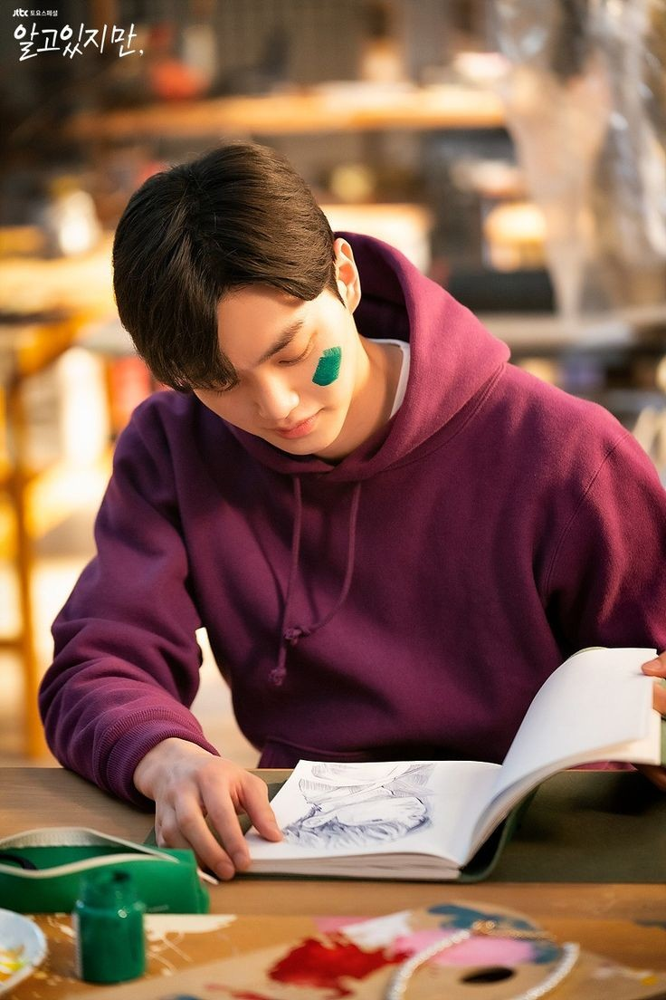

Nevertheless
Nevertheless is a 2021 South Korean television series starring Han So-hee, Song Kang, and Chae Jong-hyeop. Based on a popular webtoon of the same name which was first published on Naver Webtoon, it tells the story of two poeple whoe are attracted to each other but are skeptical about love, owing to their past relationships. It aired on JTBC's Saturdays at 23:00 (KST) time slot from June 19 to August 21, 2021. Each episode was released on Netflix in South Korea and Internationally after its television broadcast.
Synopsis
An uncertain romance begins between Yoo Na-bi, a heartbroken woman who no longer believes in love, and Park Jae-eon, a flirtatious man who does not want to commit to a relationship.
Source: Wikipedia